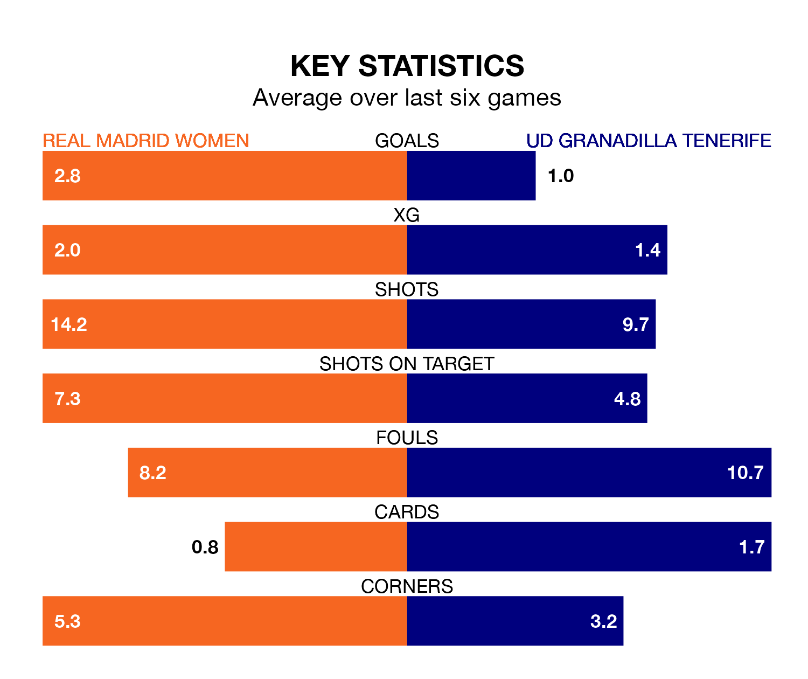

Real Madrid Women are heavy favourites to keep all three points at home in Sunday's kick-off against UD Granadilla Tenerife.
Madrid Women, who sit second in Liga F with 17 games played, are priced at 1.2 to seal victory at the Estadio Alfredo Di Stéfano.
Sitting seven places and 20 points behind them in the table, Granadilla Tenerife are 10.0 to win with *Betting Company*, while the draw is at 6.0.
With 47 goals in 17 games so far this season, Madrid Women are the league's second-highest scorers with 2.8 goals per game. And they are conceding fewer than average, letting in 21 goals at a rate of 1.2 per game.
Granadilla Tenerife, meanwhile, are below average scorers, with 1.2 goals per game, compared to a league average of 1.6. They have conceded 1.5 goals per game.
The hosts are in fantastic form in Liga F, with five wins and a draw from their last six games.
With no wins and four draws over that period, the away team's form is much worse – they have taken four points from 18, compared to Madrid Women's 16.
In the last 10 years, Madrid Women and Granadilla Tenerife have played each other on seven occasions. Madrid Women won three of them, Granadilla Tenerife two, and they drew twice.
On average, Madrid Women scored 1.4 goals and Granadilla Tenerife 1.1 in those matches.
Their last meeting was on October 1, when Madrid Women won 2-1 away.
With María Isabel Rodríguez Rivero between the sticks, Madrid Women can rely on one of the league's safest pair of hands. She has kept four clean sheets in her 15 appearances this season in Liga F.
In Granadilla Tenerife's net, Aline Villares Reis also has four clean sheets in 16 games. She has conceded a goal every 63 minutes, 80% more often than the 113 minutes between goals for Rodríguez Rivero.
Madrid Women's last match was on Wednesday, a 1-1 draw against Atletico Madrid Women, with Olga Carmona García getting the goal for Madrid Women.
Granadilla Tenerife lost 1-0 against Levante Women last time out, on February 11.
Updated: 12:06 (UTC), 15/02/24